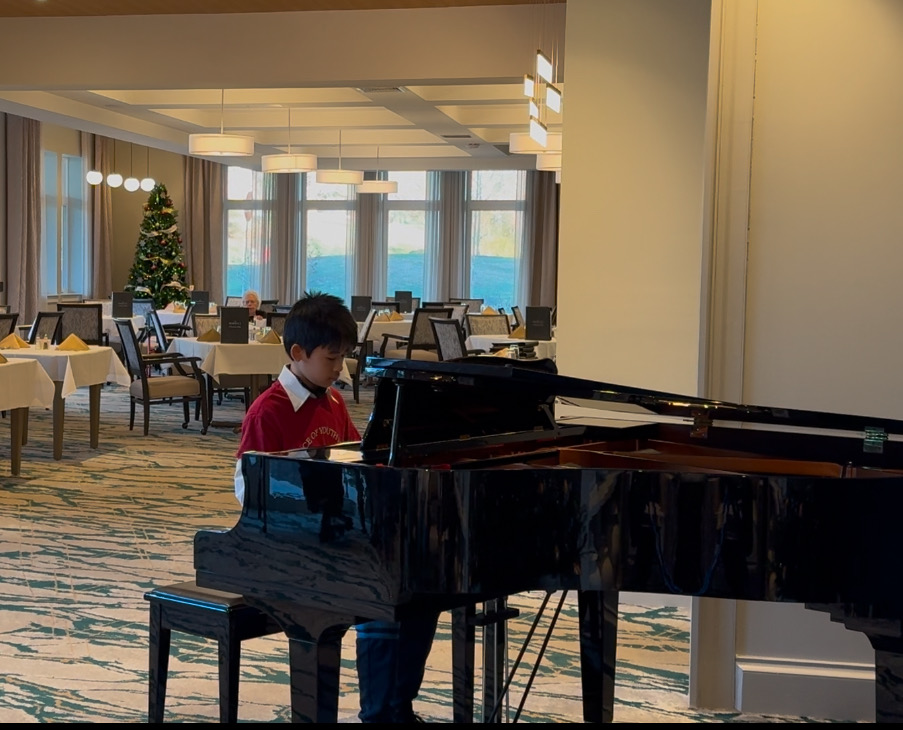

This page is dedicated to my piano journey.
I started playing at five years old and have continued this passion for almost ten years so far. A very recent (and unforgettable) experience in playing the piano that significantly boosted my interest was attending the 2024 ISEP in China, where I got to play at the Shanghai Conservatory of Music and meet many new and talented friends. Subscribe to my YouTube channel! Embedded below is my first and only improvisation.